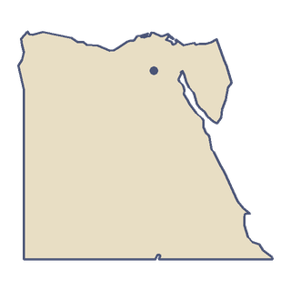

Mesir
Mesir sebagian besar gurun, tapi kebanyakan orang Mesir tinggal di sepanjang Sungai Nil, di pita hijau lahan pertanian dan delta lebar di tepi laut. Selama ribuan tahun banjir tahunan sungai menghidupi negeri ini, sampai Bendungan Tinggi Aswan, selesai pada 1970, menjinakkannya.
“Aku akan mengikuti pita hijau Sungai Nil terus ke selatan.”
- Ditemukan pada 1799, Batu Rosetta memuat satu dekret dalam tiga aksara; batu ini membantu Jean-François Champollion membaca hieroglif pada 1822.
- Terusan Suez dibuka pada 1869, menghubungkan Laut Tengah dengan Laut Merah, sehingga kapal tak perlu lagi berlayar mengelilingi Afrika.

Bentang alam
Luas Mesir sekitar 1.010.408 km², tetapi hanya sekitar 3,5 persen dari daratan itu yang digarap dan dihuni sepanjang tahun. Gurun Barat saja mencakup sekitar dua pertiga negeri ini. Di barat laut, Depresi Qattara turun hingga 133 meter di bawah permukaan laut. Di timur, Semenanjung Sinai menjadi satu-satunya jembatan darat antara Afrika dan Asia, dan Gunung Katarina di sana, setinggi lebih dari 2.600 meter, adalah puncak tertinggi di Mesir. Di ujung selatan, Bendungan Tinggi Aswan menahan Danau Nasser, yang panjangnya sekitar 479 km dan termasuk danau buatan terbesar di dunia.
Transportasi
Perkeretaapian Mesir, yang didirikan pada 1854, adalah yang tertua di Afrika dan Timur Tengah. Ruas pertamanya membentang dari Aleksandria ke Kafr el-Zayyat, dan pada 1856 jalurnya sampai ke Kairo. Sebagian besar jalur utama masih berawal di Stasiun Ramses di Kairo. Kereta tidur berangkat setiap hari dari Kairo ke selatan menyusuri Sungai Nil menuju Luxor dan Aswan.
Makanan
Pada Desember 2025 UNESCO memasukkan koshary, hidangan sehari-hari Mesir, ke daftar warisan budaya takbenda dunia. Koshary memadukan nasi, pasta, lentil hitam, dan bawang goreng, dengan cuka, bawang putih, dan saus pedas. Sarapan sering berupa ful medames, kacang fava rebus dengan minyak zaitun dan jintan. Roti disebut eish, kata Arab untuk "kehidupan".
Pendidikan
Al-Azhar di Kairo bermula dari sebuah masjid yang selesai pada 972, dan termasuk universitas tertua di dunia.
Terbang di atas Mesir.
-


 Kota 4 dari 21
Kota 4 dari 21Kairo
Piramida Agung Giza
“Piramida lebih tua dari cerita apa pun yang kutahu, dan masih lebih tinggi dari seluruh jalan tempat tinggalku.”
Aku akan terbang satu putaran mengelilingi puncak Piramida Agung. Penjaganya adalah Unta dan Sphinx.
Pesawat tiba di Kairo dari Paris. Selesaikan kota ini dan peta membuka jalan ke Roma.